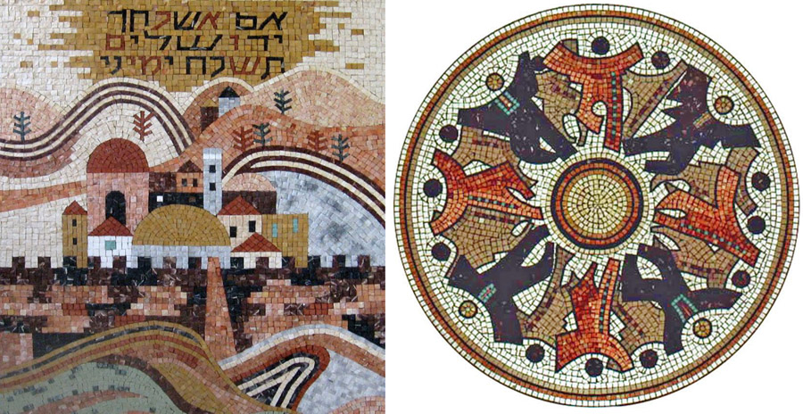
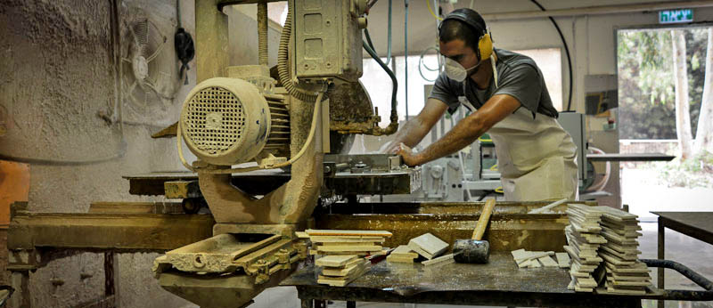
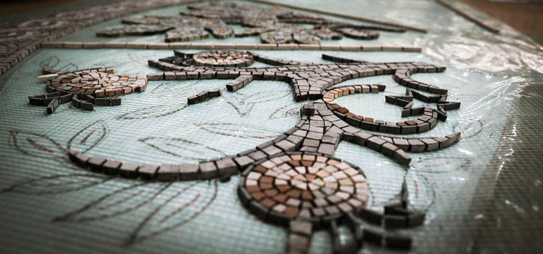
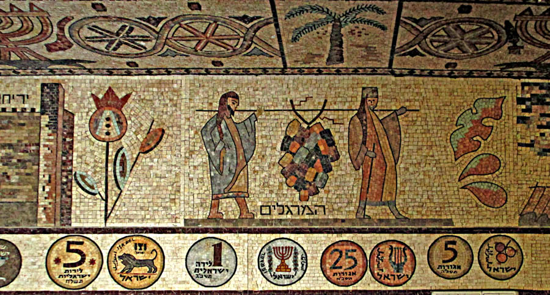
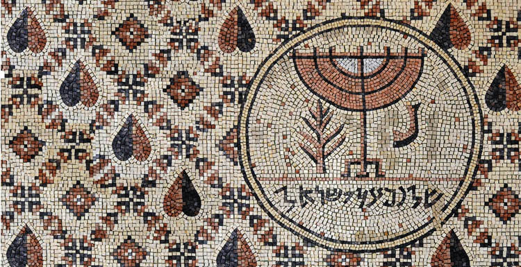
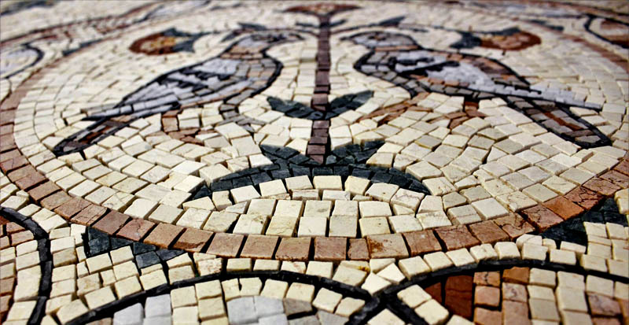
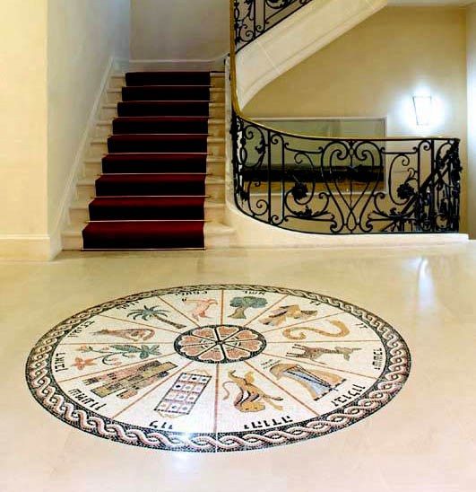
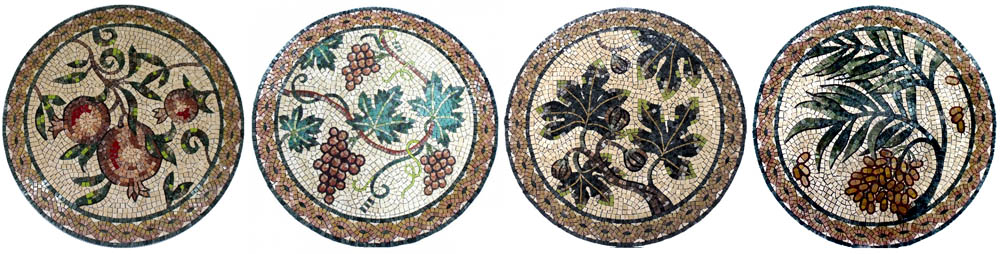

Возрождение государства Израиль и древние мозаики синагог
Опыт этой мозаичной мастерской интересен прежде всего тем, что само ее появление было непосредственно связано с древней историей моего народа.

Панно для синаоги "Ор а-Тора" / "Если забуду тебя, Иерусалим, пусть забудет меня..." /. Справа: панно "Хора"
Кибуц Эйлон (Eilon), расположен в самом сердце Западной Галилеи. Здесь всегда очень зелено, красиво и не слишком жарко, даже в самые невыносимо душные дни израильского лета. И здесь начинаются туристические тропы по самым живописным и интересным местам Галилеи.
Этот кибуц был создан в 1939 году в русле стратегии по заселению / злые языки называют это захватом / Эрец Исраэль. Построен он был по методу поселений «стена и башня»: за ночь устанавливали дозорную деревянную башню и обносили территорию возле нее защитным ограждением, чтобы его возможно было оборонять. Кибуц основан членами ядра "Шомер Хацаир" подмандатной Палестины и репатриантов из Польши.
Со временем, чтобы обеспечить работу и занятость в кибуце ветеранов, решили реализовать идею устройства небольшой мастерской по созданию мозаики. В шестидесятых были приобретены станки по распиловке и обработке камня и… Начало было не слишком успешным, но постепенно члены кибуца нашли способ создавать мозаику. Учредителями Эйлон-Moзаика были Мотцик и Кальман. Затем к ним присоединился Меирка (Мэир) Давидзон (он был один из создателей и бойцов организации "Пальмах").


.Завод нанял небольшой штат сотрудников, которые бы продвигали и рекламировали Эйлон-Мозаика. Они встречались с ведущими архитекторами страны, предлагая им проекты мозаичные композиции для интерьеров и фасадов зданий, а также для благоустройства. Мозаичники Эйлон-мозаики поначалу специализировались исключительно на репликах (копии) мозаики древних синагог, найденных в археологических раскопках в Израиле. Однажды, некий профессор из Иерусалима и заинтересовался и купил одну из мозаичных копий. Для работников завода это был знак того, что они на правильном пути, и они продолжили изготавливать копии мозаик других древних синагог Израиля.

Панно для синаоги "Ор а-Тора" в Акко«В пятидесятых и шестидесятых археология была очень популярна, и тысячи простых израильтян из поселений посещали мероприятия и выставки израильской археологии, чтобы увидеть связь с прошлым. Зная, что здесь в древние времена жили евреи, нечто произведенное здесь и сочетающееся по колориту с местным пейзажем, волновало общественность. Когда израильский потребитель видит что-то произведенное здесь, что соответствует колориту места, что не выглядит буржуазно (среди переселенцев в Эрец Исраэль было немало социалистов) и не какой ни будь старомодный костюм, и не закрытая обувь, заимствованная из Европы – это давало ощущение новизны, которое гармонировало с ощущением обновления в Сионизме.
Объясняется эта волна интереса тем, что по-настоящему бурная археологическая работа началась лишь после провозглашения независимости Израиля в 1948 г. До этого, в 20-30-е годы тут копали в основном французы и англичане. После становления государства, перед израильскими учеными открылся простор для деятельности, причем основную массу специалистов составили преисторики и библеисты. К ним присоединились и классики (Греция, Рим и Византия). Здесь надо также иметь в виду такое явление, как «политическая» археология, имевшая сильное идеологическое значение.


Реплики мозаик древней синагоги в Иерихо
Так что волна интереса израильтян ко всему, что связано с историей, культурой, преемственностью поколений немало способствовала успеху предприятия. В шестидесятом году Цион Габай из Акко, один из старейшин синагоги «Ор а-Тора» (Свет Торы), обратил внимание на мастерство художников из Эйлон-Мозаик и разместил у них «долгоиграющий» заказ декорирования синагоги (работа продолжается до сего дня) тунисских евреев, желавших «восстановить» синагогу своего детства Эль-Гриба Джебра в Тунисе. (это старейшая синагога в Северной Африке: ей уже больше двух тысяч лет. В ней хранятся свитки одной из древнейших в мире копии Торы).

С тех пор, мастерская начала получать приглашения на работу разнообразную и интересную. В кибуце был основан выставочный зал мозаичных творений фабрики, который постепенно стал центром притяжения туристов Израиля и из за рубежа. Таким образом, завод начал «распространять пределы своего шатра» и стал известным.В конце шестидесятых художники Эйлон получили государственный заказ. Это был уникальный и захватывающий проект огромной мозаики. Сегодня она украшает пол главного зала пол резиденции Президента в Иерусалиме. Затем были заказы на украшение мозаиками дипломатических миссий Израиля за рубежом, мозаичные панно для синагог по всей стране и за ее пределами, для интерьеров гостиниц и частных домов.
Для добычи камней, используемых в мозаике каждые пол года выезжали несколько работников Эйлы на грузовике. Они проезжали по известному маршруту собирания камней. Все камни местные – из Эрец Исраэль: гранит с гор Эйлата, каменные блоки из Мицпе-Рамон, зеленый камень из Тимны, черный базальт с Голанских высот. Это было особенное время путешествия по Земле Отцов. Это было не просто заготовление сырья для производства, каждый камень нес в себе память истории и был свидетелем наших патриархов, странствующих по Ханаанской земле, царей и пророков Израиля. И, конечно, и для художников и заказчиков мозаичных панно было немаловажно, что сама мозаика, тысячи кусочки камней – это плоть от плоти земли Израиля.


Панно для синаоги "Ор а-Тора" / Панорама Иерусалима /. Снизу: из серии "Шиват а-миним" / плоды Обетованной земли /
Для меня опыт кибуцной мозаичной мастерской интересен прежде всего тем, что само ее появление было непосредственно связано с древней историей моего народа, потребностью и интересом новых и новых волн алии узнать и понять свои корни. Часто оторванные от еврейства новые репатрианты и вся страна искала свои корни в Библии (не даром нас называют народом Книги) и во-вторых во всем, что хранила и пронесла через тысячелетия Эрец Исраэль – земля Израиля.
в статье использованы материалы eilonmosaics